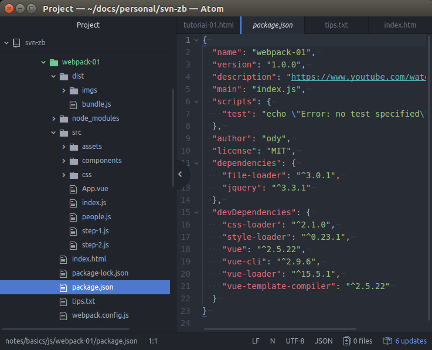
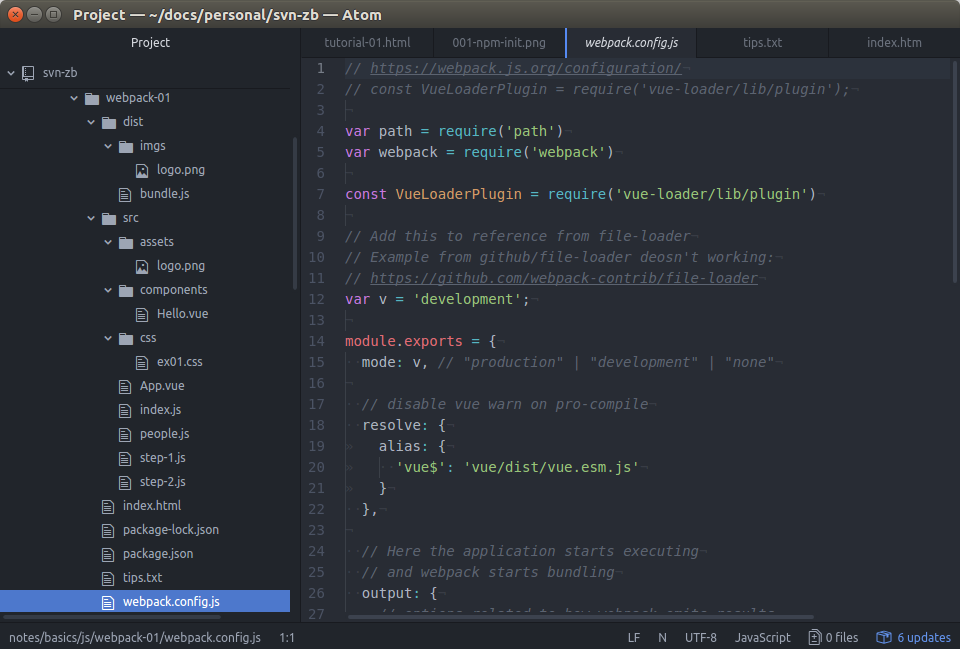
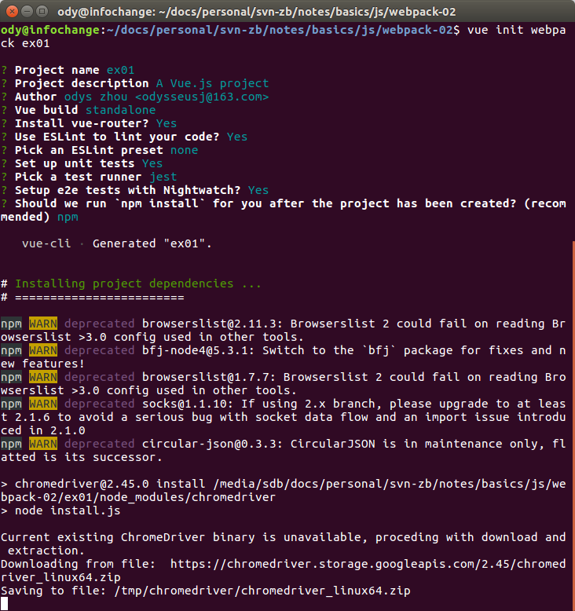
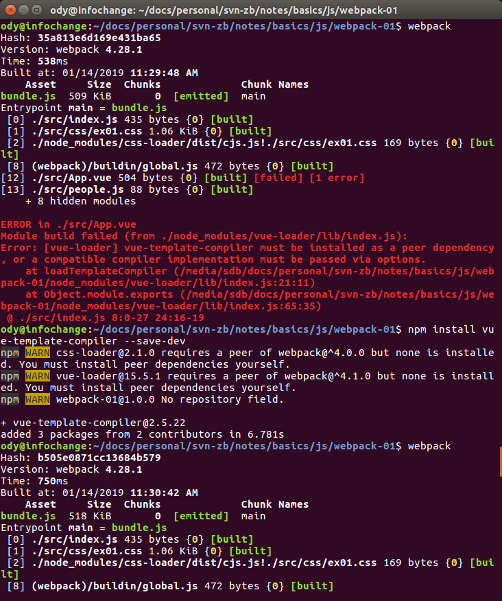
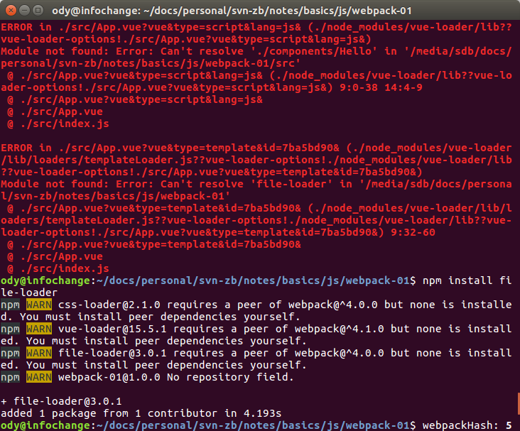
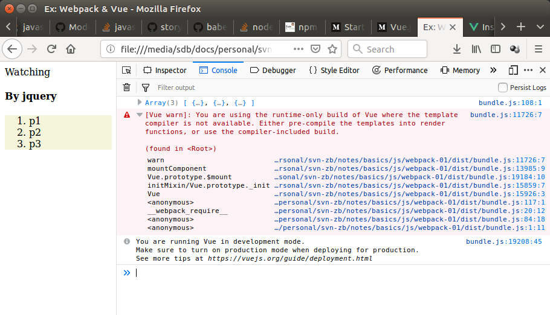
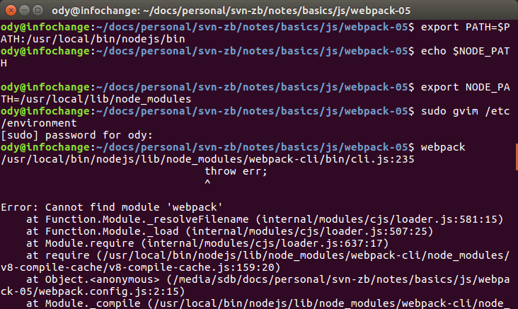

Introduction
This document is a general guid for setting up B/S front end IDE enviroment, using Webpack and Vue.js.
Reference 1 is a quick but perspective survey for beginer although it's written in 2016.
Read 1 & 2 before go through this tutorial if you don't know about 'export', 'import', and bundling or transplie.
In this article, we will start from installing node, through integrating Semantic frame modules, and will finally establish an organization coding / designing convention of application development.
All the steps are illustrated on Ubuntu 16.04 LTS. Readers may needing check official sites from time to time to find out menus for other platforms like MS Windows.
Install Node.js & NPM
About
The article gives Some examples of where Node shouldn't been used.
Every Package is installed via npm
npm docs home: Getting Started
Install Node
Difficult in China.
Following the official installation doc won't work (sudo curl -sL https://deb.nodesource.com/setup_6.x | sudo -E bash -),
or this at Ask Ubuntu.
Check a hackish way at CSDN.
1. Download Node 10.15.0 LTS
- for version updating, see Node Version Releas Schedule.
2. Unzip
sudo cp nodejs /usr/local/bin -r
3. Link
lrwxrwxrwx 1 root root 30 Jan 10 12:01 /usr/bin/node -> /usr/local/bin/nodejs/bin/node
ody@infochange:~$ ls /usr/bin/npm* -l
lrwxrwxrwx 1 root root 29 Jan 10 12:01 /usr/bin/npm -> /usr/local/bin/nodejs/bin/npm
ody@infochange:~$ ls /usr/bin/npx* -l
lrwxrwxrwx 1 root root 29 Jan 10 12:01 /usr/bin/npx -> /usr/local/bin/nodejs/bin/npx
4. Check Version
v10.15.0
ody@infochange:~$ npm -v
6.5.0
Install webpack
Reference Video (webpack 2.4.1)
Install webpack & webpack-cli globally.
-g: install globally
ody@infochange:~$ sudo npm install -g webpack
/usr/local/bin/nodejs/bin/webpack -> /usr/local/bin/nodejs/lib/node_modules/webpack/bin/webpack.js
ody@infochange:~$ webpack -v
4.28.1
ody@infochange:~$ sudo npm install -g webpack-cli
/usr/local/bin/nodejs-00/bin/webpack-cli -> /usr/local/bin/nodejs-00/lib/node_modules/webpack-cli/bin/cli.js
> webpack-cli@3.2.1 postinstall /usr/local/bin/nodejs-00/lib/node_modules/webpack-cli
> lightercollective
*** Thank you for using webpack-cli! ***
Please consider donating to our open collective
to help us maintain this package.
https://opencollective.com/webpack/donate
***
npm WARN webpack-cli@3.2.1 requires a peer of webpack@4.x.x but none is installed. You must install peer dependencies yourself.
+ webpack-cli@3.2.1
added 210 packages from 129 contributors in 6.675sTip: see npm –save or –save-dev. Which one to use?
Example: First Webpack Project (Import JQuery)
With webpack, the jquery can be easyly dependended on.
1. create a basic npm project structure
Initiate a SPA (single page application) project.
In the new project folder,
 
2. install jquery
npm install css-loader style-loader --save-dev
package.json/dependencies
"devDependencies": {
"css-loader": "^2.1.0",
"style-loader": "^0.23.1"
}3. import jquery in js
index.js:
$('body').append('<h4>By jquery</h4>');
4. setup webpack.config.js
The basic webpack config can be nothing. Let's configure the output bundle.
module.exports = {
mode: v, // "production" | "development" | "none"
// Here the application starts executing
// and webpack starts bundling
output: {
// the target directory for all output files
filename: "bundle.js", // string
},
}5. Use bundle.js
index.html:
Then use webpack to transpile the index.js.
Why Webpack?
Now, the transpile process show us how webpack makes source component published as bundles understood by browser.
Developer now no longer needing consider which html page need which JavaScript modules. It's handled by webpack.
Install Vue.js
About
Vue.js is a JavaScript Framework
Install
sudo npm install --save-dev vue-cli
This makes webpack know about Vue.js
package.json:
"devDependencies": {
"css-loader": "^2.1.0",
"style-loader": "^0.23.1",
"vue": "^2.5.22",
"vue-cli": "^2.9.6",
"vue-loader": "^15.5.1",
"vue-template-compiler": "^2.5.22"
}Import Vue Components
Component is the basic way how Vue.js is working.
Note:
The Vue.js guid
provided a basic knowledge base of how to use Vue.js.
index.js:
import App from './App.vue'
The finished page shows how vue.js component (App.vue) looks like. It's only a html tag in index.html.
download project final source of this tutorial.
Integrate with Anclient.js
About
Anclient.js is the JavaScript client of the semantic.jserv framework.
Sample Project
The Anclient.js test can work with help of Vue 2.5.17.
See Anclient.js/test/api-basic/testVue.js function load()
With the help of Anclient.js/Protocol.js, the responded data is bound to vue template.
obj7 = new Vue({
el: '#obj-7',
data: {
groceryList: [
{ id: 0, text: 'Vegetables' },
] }
});Troubleshootings
| Error | Handling |
|---|---|
vue init webpack ex01 Command Halt |
That's because vue trying to download chrome driver. Try Chinese way. |
Can't resolve vue loaderERROR in ./src/index.js Module not found: Error: Can't resolve 'vue-loader' in '... /js/webpack-01' @ ./src/index.js 8:0-27 24:16-19 |
Install vue-loader.
ody@infochange:~/webpack-01$ npm install vue-loader --save-dev
In webpack.config.js:
{test: /\.vue$/, loader: "vue-loader" },
{test: /\.(png|jpg|gif)$/, loader: "file-loader"}, |
Can not find module 'webpack/lib/RuleSet'
ERROR in ./src/App.vue Module build failed (from ./node_modules/vue-loader/lib/index.js): Error: Cannot find module 'webpack/lib/RuleSet' |
Set node path to where node_modules installed globally.
export NODE_PATH=/usr/local/bin/nodejs/lib/node_modules
|
Error in ./src/App.vue'
Module build failed ... Error: [vue-loader] vue-template-compiler must be installed ... |
Install file loader npm install vue-template-compiler --save-dev
 |
Module not found, can't resolve './components/Hello'
Module not found, can't resolve 'file-loader' |
Install file loader npm install file-loader
In webpack.config.js/modules/rule:
{test: /\.vue$/, loader: "vue-loader" },
{test: /\.(png|jpg|gif)$/, loader: "file-loader"}, |
You are using the runtime-only build of vue where the
template compiler is not avialable...
 |
Explaination: Runtime-Compiler not included in bundle.
See the
Vue.js document explained why this happening. In webpack.config.js:
resolve: { alias: { vue: 'vue/dist/vue.ems.js' } }
or import Vue from 'vue/dist/vue.js'
|
| Can't find webpack even after PATH and NODE_PATH been set.
Error: Cannot find module 'webpack'

|
Link webpack globally. npm link webpack
See StackOverFlow
|
References
- Mark Brown, Understanding JavaScript Modules: Bundling & Transpiling, April 12, 2016
- Cho S. Kim, Understanding module.exports and exports in Node.js, August 06, 2018
- Webpack Doc: installation
- Webpack Doc: Command Line Interface
- Configuration
- Vue.js Doc: Introduction
- Vue.js Doc: Installation
- Vue.js Examples